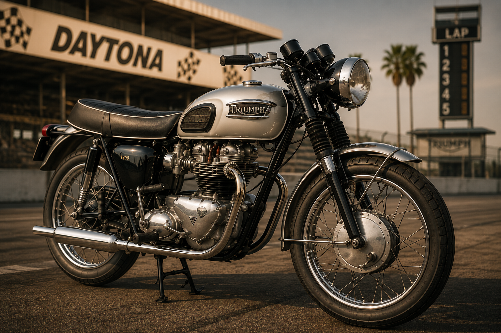
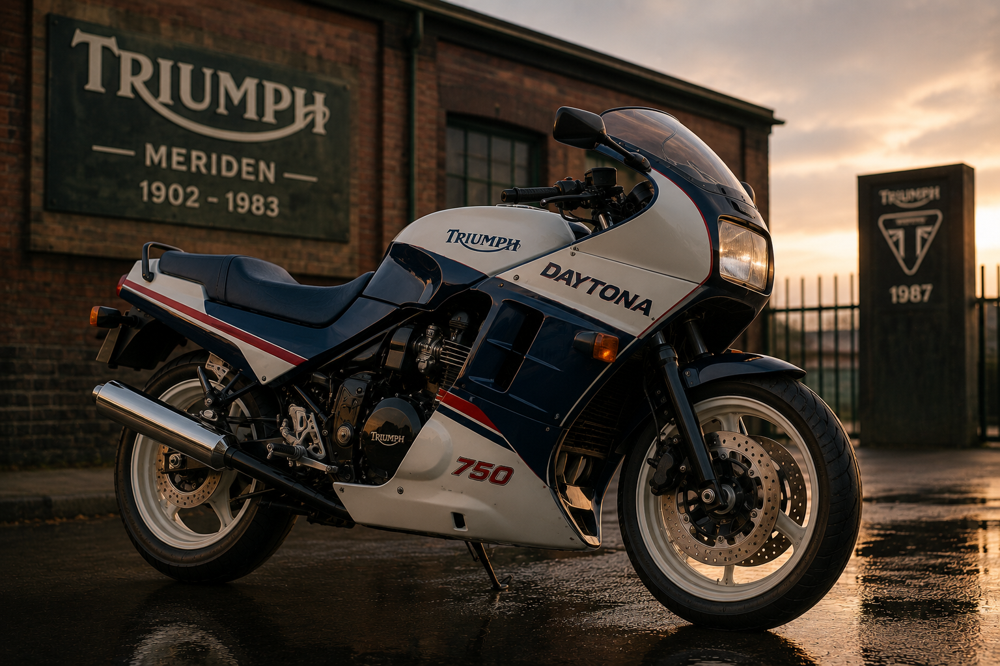
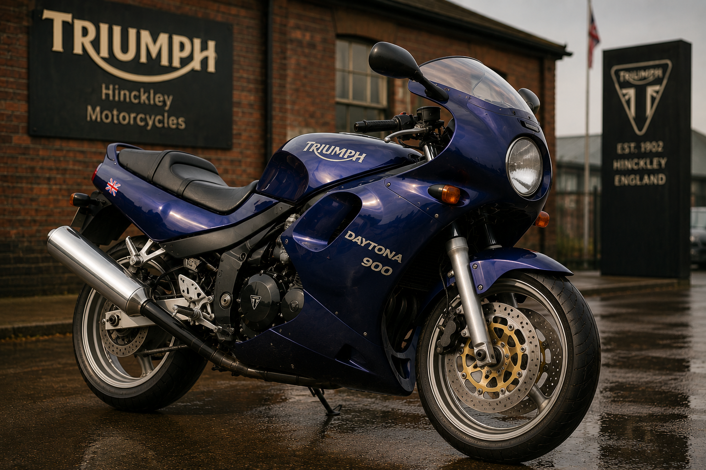
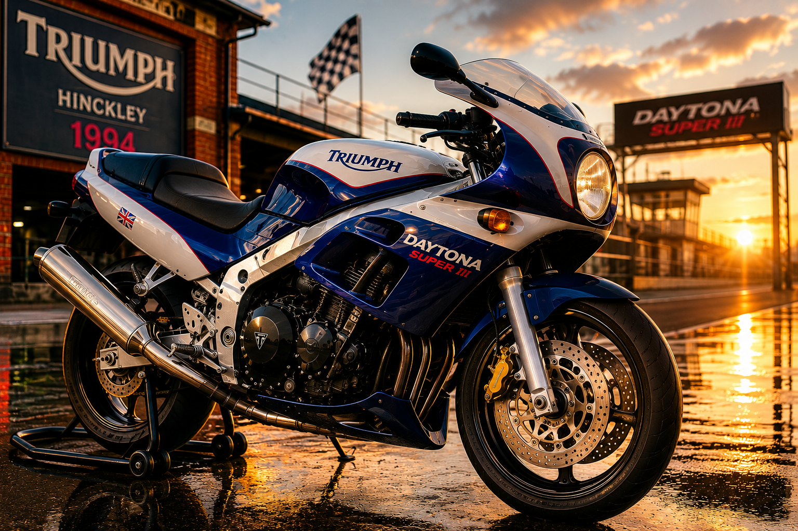
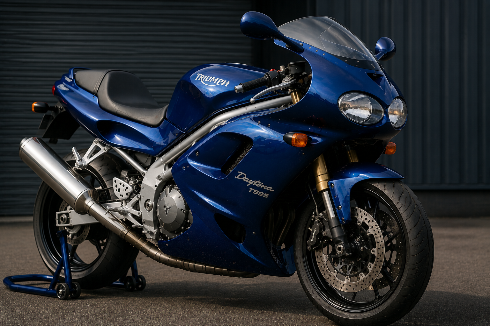
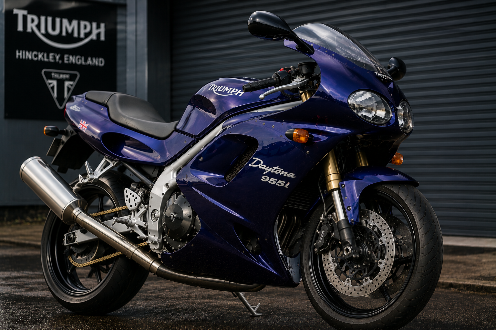
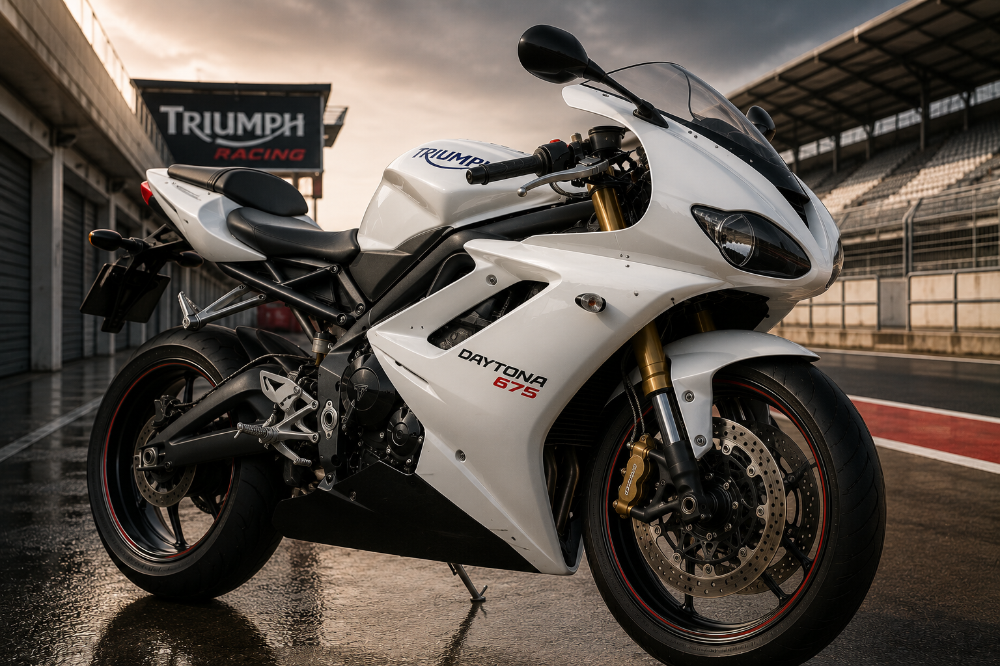
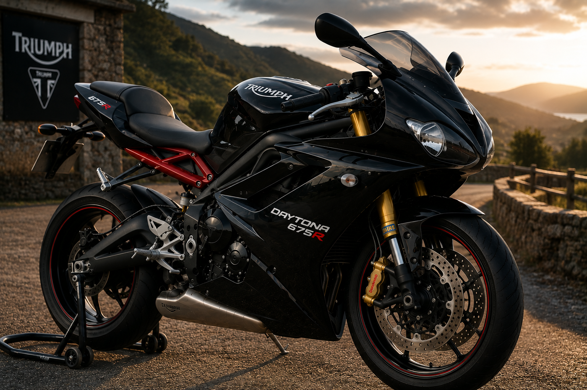
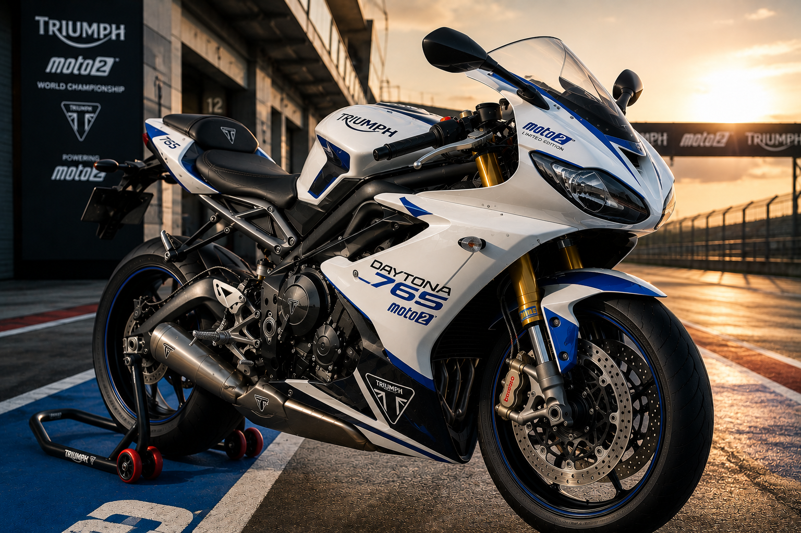

Aux Origines du Nom — Daytona Beach et la Gloire Triomphante
Quand Triumph dominait les plages de Floride
Pour comprendre pourquoi Triumph a baptisé ses sportives "Daytona", il faut remonter aux
années 1950 et 1960, à l'époque où la plage de Daytona Beach, longue de 37 kilomètres et
parfaitement plate, servait de circuit naturel pour les records de vitesse et les courses
sauvages.
Les motos Triumph y sont chez elles. Légères, puissantes, solides, elles dominent les
épreuves face aux machines américaines bien plus lourdes. Les pilotes américains qui roulent
en Triumph accumulent les victoires, les records, les couvertures de magazines. La marque
britannique est la reine de Daytona Beach, et tout le monde le sait.
En 1966, Buddy Elmore remporte la prestigieuse 200 Miles de Daytona
sur une Triumph préparée par l'équipe officielle. Cette victoire, face aux meilleurs pilotes
américains et à leurs machines, est l'une des plus belles pages de palmarès de la marque.
Elle scelle pour toujours le lien entre le nom Triumph et la ville de Daytona.
C'est dans ce contexte de domination sportive que naît logiquement la première moto portant
officiellement ce nom légendaire.
1967 — La Triumph T100 Daytona : La Première du Nom
Un hommage direct à la victoire américaine

En 1967, Triumph officialise le nom en lançant la T100 Daytona.
C'est une évolution de la T100 Tiger, elle-même dérivée de la légendaire Bonneville. Le
message est clair : cette machine est construite dans l'esprit des victoires floridaines.
Sous le réservoir en goutte d'eau caractéristique de l'époque, on trouve le bicylindre
parallèle de 499 cm³ d'Edward Turner, revisité et poussé dans ses derniers
retranchements. La T100 Daytona reçoit des culasses à hauts niveaux de compression, des
carburateurs Amal soigneusement réglés, et un allumage optimisé pour le sport. La puissance
grimpe à environ 39 chevaux — modeste selon les standards d'aujourd'hui,
mais redoutable pour l'époque sur une machine aussi légère.
Sa silhouette est celle de son temps : pure, dépouillée, sans artifice. Un cadre double
berceau en acier, des freins à tambour, une fourche télescopique avant. Pas de sophistication
électronique, pas d'aide à la conduite. Juste la mécanique, le pilote, et la route.
La T100 Daytona sera produite jusqu'en 1974, évoluant discrètement au fil
des millésimes. Elle représente la première incarnation de ce qui deviendra une grande lignée.
1987 — La Daytona 750 : Le Nom Revient dans l'Ère Moderne
Une dernière tentative avant la renaissance

Après la fermeture de Meriden en 1983, le nom Triumph survit sous une forme réduite.
Les droits commerciaux permettent à une petite société de commercialiser quelques modèles
sous l'étiquette Triumph, dont une Daytona 750 en 1987.
Cette machine, produite dans des conditions difficiles avec des moyens limités, utilise un
moteur bicylindre de 750 cm³. Elle incarne la résistance désespérée d'une marque qui refuse
de mourir, portée par des passionnés qui croient encore en l'avenir du lion britannique.
Historiquement intéressante, cette Daytona reste cependant une machine transitoire. La vraie
renaissance, celle orchestrée par John Bloor depuis son usine secrète de Hinckley, est en
train de se préparer dans l'ombre. Et quand elle arrivera, le nom Daytona sera au cœur du
projet.
1993 — La Daytona 900 : La Renaissance par le Sport
Hinckley frappe fort avec sa première vraie sportive

En 1993, la nouvelle Triumph de John Bloor — à peine sortie de ses premières
années de production à Hinckley — lance sa première véritable sportive de l'ère moderne :
la Daytona 900. Et d'emblée, le ton est donné.
Le moteur est un trois cylindres en ligne de 885 cm³, la signature technique
de la nouvelle Triumph. Ce choix architectural, à contre-courant des quatre cylindres japonais
alors dominants, procure une sonorité et des sensations radicalement différentes. Entre la
douceur ronde d'un bicylindre et le caractère acéré d'un quatre cylindres, le trois cylindres
Triumph occupe un territoire unique, immédiatement addictif.
La Daytona 900 développe 98 chevaux et affiche un comportement dynamique
soigné. Sa carrosserie est audacieuse pour l'époque : un carénage intégral, un phare rond
caractéristique, une ligne tendue et musclée. Elle ne ressemble pas aux sportives japonaises.
Elle a son propre caractère, sa propre identité. C'est indéniablement une Triumph — et c'est
indéniablement une sportive.
La presse spécialisée l'accueille avec enthousiasme. Le monde de la moto comprend que
Hinckley n'est pas là pour faire de la figuration. La Daytona 900 est une vraie moto, pour
de vrais passionnés.
1994–1996 — La Daytona Super III : Le Puriste Absolu
Trois cylindres, zéro compromis

Dans la foulée de la 900, Triumph pousse le concept encore plus loin avec la
Daytona Super III, produite entre 1994 et 1996. C'est une
machine pensée pour les puristes, les pilotes qui ne cherchent pas la facilité mais le plaisir
brut.
Le trois cylindres est retravaillé en profondeur : nouvelles culasses, carburateurs plus
généreux, rapport de compression relevé. La puissance grimpe à 115 chevaux
pour un poids contenu. Les performances sont là : la Super III abat le 0 à 100 km/h en
moins de quatre secondes et dépasse les 240 km/h en vitesse de pointe.
Mais ce qui marque les pilotes qui l'ont conduite, c'est la sonorité. Le trois cylindres
hurlant à pleine charge produit une musique que aucun autre moteur ne peut imiter. Grave et
rauque à bas régime, il se transforme en crescendo furieux au-delà de 8 000 tr/min. Les
propriétaires d'une Super III n'oublient jamais le son de leur machine.
La Super III est produite en petites séries. Aujourd'hui, les exemplaires en bon état sont
des objets de collection prisés par les connaisseurs.
1997 — La Daytona T595 : La Révolution
La moto qui a tout changé — Le chef-d'œuvre de Hinckley

1997. Triumph sort la machine qui va changer sa trajectoire pour toujours.
La Daytona T595 n'est pas une évolution — c'est une révolution totale.
Une rupture nette avec tout ce qui existait avant. Et elle marque l'entrée définitive de
Triumph dans la cour des très grands.
Tout est nouveau sur cette moto. Le cadre est une pièce maîtresse : un treillis en aluminium
usiné avec une précision d'orfèvre, qui assure une rigidité et une légèreté inédites. La
suspension avant est une fourche inversée signée Showa. L'amortisseur arrière
est réglable. Les freins à disque sont mordants et progressifs. Triumph ne fait plus dans
l'approximatif.
Le moteur est un tout nouveau trois cylindres de 955 cm³ (le "T595" était
le nom de code du projet ; la cylindrée réelle est 955) à injection électronique — une
première chez Triumph. Il développe 128 chevaux et un couple généreux sur
toute la plage de régimes. La T595 abat les 250 km/h et le 0 à 100 km/h
en un peu moins de 3,5 secondes.
Mais au-delà des chiffres, c'est la ligne qui coupe le souffle. Dessinée par une équipe de
stylistes inspirés, la T595 est une œuvre d'art. Son carénage fluide, ses courbes tendues,
son regard de prédateur avec ses deux phares ovales imbriqués — elle n'a rien à voir avec
les sportives japonaises rectangulaires de l'époque. Elle est sensuelle, agressive, et
immédiatement reconnaissable.
La presse moto mondiale est en délire. Les essais comparatifs placent la T595 au sommet.
Motocycliste, Moto Journal, Cycle World — tous s'accordent :
la Daytona T595 est l'une des plus belles et des meilleures motos jamais construites.
Les commandes explosent. C'est la confirmation absolue que Triumph est de retour au sommet.
1999 — La Daytona 955i : L'Évolution Maîtrisée
Affiner le chef-d'œuvre

Fort du triomphe de la T595, Triumph renomme et fait évoluer sa sportive en 1999.
Elle devient officiellement la Daytona 955i — le "955i" reflétant enfin
fidèlement la cylindrée réelle du moteur et son injection électronique.
Les évolutions sont ciblées et judicieuses. La gestion moteur est reprogrammée pour affiner
la courbe de couple et améliorer la réponse à l'accélérateur. La fourche avant reçoit de
nouveaux réglages. L'ergonomie est légèrement revue pour améliorer le confort sur longs trajets
sans trahir le caractère sportif de la machine.
La 955i sera produite et continuellement affinée jusqu'en 2006, avec des
mises à jour annuelles portant sur la puissance, le châssis, les équipements. Elle gagne
progressivement des éléments comme le contrôle de traction sur les dernières
versions, une première dans la gamme Triumph.
Pendant sept ans, la Daytona 955i sera la reine des sportives britanniques. Elle accumule
les récompenses, fidélise des milliers de propriétaires, et inspire une génération entière
de passionnés. Mais en 2006, Triumph frappe un coup encore plus fort.
2006 — La Daytona 675 : Le Choc du Siècle
Davide contre Goliath — et Davide gagne

2006. Triumph change de segment et change de dimension. Plutôt que de
continuer à affronter les hypersportives de 1000 cm³, la marque décide de créer sa propre
catégorie avec la Daytona 675. C'est l'un des paris les plus audacieux de
l'histoire récente de la moto. Et c'est un triomphe absolu.
Le moteur est entièrement nouveau : un trois cylindres de 675 cm³, compact,
ultra-léger, développant 123 chevaux à 12 500 tr/min. Ce
chiffre, pour un moteur de cette cylindrée, est tout simplement extraordinaire. Pour
comparaison, les meilleures 600 cm³ japonaises de l'époque peinent à dépasser les 110 chevaux.
La Triumph les surpasse tout en proposant un couple plus généreux à bas et mi-régime.
Mais les chiffres ne disent pas tout. Ce qui rend la 675 vraiment spéciale, c'est son
caractère. Le trois cylindres développe une sonorité que personne n'avait
jamais entendue sur une supersportive : grondant et charnel à bas régime, il se transforme
en un hurlement mécanique strident et euphorisant à haute vitesse. C'est une bande-son unique,
immédiatement reconnaissable, absolument addictive.
Le châssis est à la hauteur : un cadre périmétrique en aluminium hyper rigide, une fourche
Kayaba entièrement réglable, un mono-amortisseur Öhlins sur les versions haut de gamme.
La 675 plonge dans les virages avec une précision chirurgicale. Elle colle à la trajectoire,
transmet chaque information du bitume au pilote, communique. C'est une moto vivante.
La presse mondiale n'en revient pas. Motorcycle News lui décerne le titre de
"Moto de l'Année". Les tests comparatifs voient la 675 humilier régulièrement
les Yamaha R6, Honda CBR600RR et Kawasaki ZX-6R — des machines pourtant bien rodées et très
compétitives. C'est un électrochoc dans le monde des supersportives.
La Daytona 675 en compétition
Sur les circuits, la 675 s'illustre également. Elle participe au British Supersport
Championship et remporte des victoires significatives. Sa polyvalence — à l'aise
sur circuit comme sur route ouverte — en fait la référence de sa catégorie pendant plusieurs
saisons consécutives. Des équipes privées la préparent, l'affinent, et continuent à en
tirer des performances impressionnantes bien au-delà de ce que Triumph annonce officiellement.
2013 — La Daytona 675 R : La Version Ultime
Öhlins, Brembo, et perfection absolue

En 2013, Triumph lance la variante qui met tout le monde d'accord :
la Daytona 675 R. Si la version standard est déjà une excellente moto,
la R est dans une autre dimension.
L'équipement est celui d'une machine de compétition à peine homologuée pour la route.
La suspension avant est une fourche Öhlins NIX30 entièrement réglable en
compression, détente et précontrainte. L'amortisseur arrière est également signé Öhlins.
Les freins sont des Brembo radiaux, mordants et progressifs comme sur les
meilleures machines de MotoGP.
Le moteur reçoit lui aussi des évolutions : cartographie électronique revue, admission
optimisée, pot d'échappement repositionné sous la queue pour améliorer la centralisation
des masses. La puissance atteint désormais 128 chevaux tout en offrant
une courbe de couple encore plus homogène.
Le résultat est une moto qui se conduit sur circuit avec une facilité déconcertante tout en
restant utilisable au quotidien. Les propriétaires de 675 R la décrivent comme la moto
"qui ne lasse jamais", celle qu'on ressort le week-end avec la même excitation qu'au premier
jour. Un classique instantané.
2017 — La Daytona 765 Moto2 Limited Edition : L'Apothéose
Quand la compétition mondiale devient route

En 2019, Triumph prend une décision qui électrise le monde de la moto :
la marque devient le motoriste officiel de la classe Moto2 du Championnat
du Monde de MotoGP. Le moteur choisi ? Un trois cylindres de 765 cm³, dérivé
directement de la Street Triple RS, préparé et homologué pour la compétition internationale
au plus haut niveau.
Ce moteur, dans sa version course, développe environ 140 chevaux à
13 000 tr/min et propulse les meilleures machines de la catégorie à plus
de 280 km/h. Il tourne à chaque Grand Prix, sur tous les circuits du monde,
aux mains des meilleurs pilotes de la planète. C'est un banc d'essai extraordinaire pour la
technologie Triumph.
En hommage à cet engagement exceptionnel, Triumph lance une série limitée absolument
exclusive : la Daytona 765 Moto2 Limited Edition. Seulement
765 exemplaires dans le monde — un chiffre qui fait directement écho à la
cylindrée du moteur. Chaque moto est numérotée individuellement sur une plaque spéciale.
L'équipement est spectaculaire. Le moteur 765 cm³ est poussé à 130 chevaux
grâce à un kit de performance spécifique. La fourche avant est une Öhlins NIX30
cartouche entièrement réglable. L'amortisseur arrière est un Öhlins TTX36.
Les freins sont des Brembo Stylema, les meilleurs disponibles sur le marché.
Le tableau de bord est un écran TFT couleur pleine de données — puissance, mode de conduite,
contrôle de traction réglable sur cinq niveaux, anti-wheeling.
La ligne est habillée d'une livrée exclusive en blanc Moto2 avec des éléments
en bleu roi, reprenant les couleurs de l'engagement officiel en championnat du monde. Chaque
détail est soigné : les reposes-pieds sont des pièces usinées dans la masse, le guidon est
entièrement réglable, le kit carénage carbone optionnel est disponible en série.
Dès l'annonce, les 765 exemplaires trouvent preneur en quelques heures. La Daytona 765 Moto2
Limited Edition est immédiatement un objet de collection. Les propriétaires qui ont la chance
d'en posséder une savent qu'ils tiennent entre les mains quelque chose d'unique : le lien
direct entre la route et le Grand Prix mondial.
L'ADN Daytona — Ce Qui Ne Change Jamais
Les constantes d'une lignée d'exception
À travers toutes ses évolutions, de la T100 de 1967 à la 765 Moto2 d'aujourd'hui, la Daytona
a toujours incarné les mêmes valeurs fondamentales. Ce sont ces constantes qui définissent
son identité profonde et la distinguent de toute concurrence.
Le caractère avant les chiffres. Triumph n'a jamais cherché à gagner la
guerre des statistiques brutes avec la Daytona. La puissance maximale, le 0 à 100, la vitesse
de pointe — ces chiffres comptent, bien sûr, mais ce n'est jamais l'obsession de la marque.
Ce qui prime, c'est la sensation. La façon dont le moteur répond à la poignée. La façon dont
le train avant communique en entrée de virage. La façon dont la machine et son pilote ne font
plus qu'un à haute vitesse.
Le trois cylindres comme signature. De la 900 de 1993 jusqu'à la 765 Moto2,
toutes les Daytona modernes partagent cette architecture moteur unique. Ce choix délibéré
et assumé donne à chaque Daytona une sonorité et un tempérament impossibles à confondre.
On reconnaît une Daytona les yeux fermés, rien qu'à l'oreille.
Le style britannique. Chaque génération de Daytona a eu sa propre esthétique,
mais toutes ont partagé une élégance naturelle, une cohérence de design qui les distingue
des sportives japonaises. Là où ces dernières misent sur l'agressivité anguleuse, la Daytona
a toujours préservé des lignes fluides, presque organiques. Elle est belle, pas seulement
rapide.
La connexion avec la compétition. Du TT de l'île de Man aux 200 Miles de
Daytona Beach, du British Supersport Championship au Moto2 mondial, Triumph a toujours
nourri sa Daytona de route avec son expérience des circuits. Chaque évolution technique
venue de la compétition s'est traduite par un progrès sur les machines de série.
Épilogue — La Daytona, Pour Toujours
La Daytona n'est pas une moto comme les autres. Elle n'a jamais cherché à plaire à tout le
monde. Elle s'adresse à ceux qui ont cette flamme particulière — les passionnés qui savent
reconnaître l'authenticité derrière la mécanique, qui préfèrent le caractère à la perfection
froide, qui cherchent dans leur moto une compagne d'émotions plutôt qu'un simple outil de
déplacement.
De la plage de Daytona Beach aux circuits de MotoGP, du garage de Meriden à l'usine
high-tech de Hinckley, la Daytona a traversé les décennies en restant fidèle à elle-même.
Elle a évolué, s'est réinventée, a parfois disparu pour mieux revenir. Mais elle n'a jamais
perdu son âme.
Et cette âme, c'est celle d'une moto britannique — fière, passionnée, un peu têtue,
irrémédiablement séduisante. Une machine qui ne laisse personne indifférent. Une machine
qui, le temps d'un virage pris à pleine vitesse avec le trois cylindres qui hurle, vous
fait oublier tout le reste.
That's the Daytona. That's Triumph.